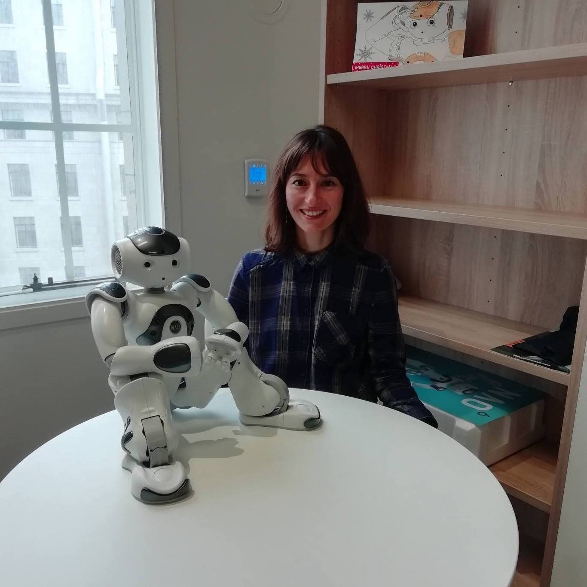

Important Dates
| Paper submission: | March 15, 2022 | Paper notification: | May 30, 2022 |
|---|---|
| Camera-ready paper submission: | June 15, 2022 |
| Paper submission: | March 15, 2022 | Paper notification: | May 30, 2022 |
|---|---|
| Camera-ready paper submission: | June 15, 2022 |
| Submission Platform: | Papercept |
|---|---|
| Special Submission Code: | ujcjj |
| Paper Template: | LaTeX or MS-Word |
Please see Call for Papers for further details.
Topics of interest include, but are not limited to, the following:
All papers submitted to special sessions will be subject to the same peer-review procedure as the regular papers. Please refer to the main conference website to have additional details.
Authors should adhere the following steps for submitting a paper to this special session:

Oya CeliktutanKing’s College London United Kingdom |
Nguyen Tan Viet TuyenKing's College London United Kingdom |
Marine ChamouxSoftBank Robotics Europe France |
Alexandra GeorgescuKing's College London United Kingdom |
Mutlu CukurovaUniversity College London United Kingdom |
Pierre LisonNorwegian Computing Center Norway |
Ho Seok AhnUniversity of Auckland New Zealand |
Program of the special session and the details about the invited talk will be announced here.